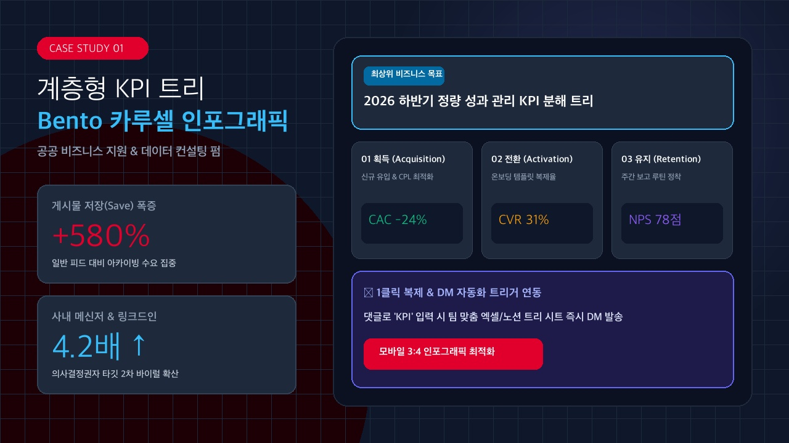
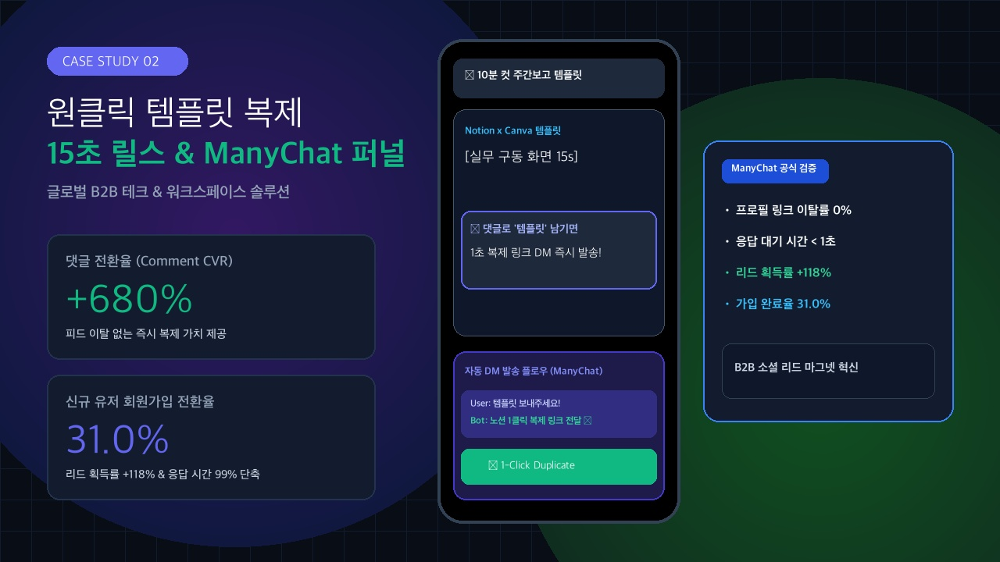
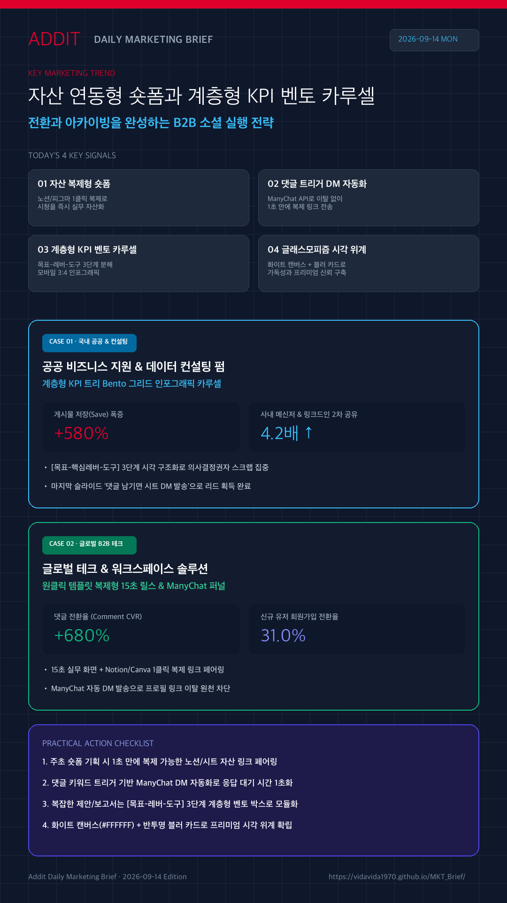

01
'보는 팁'에서 '즉시 쓰는 자산'으로 진화
노션(Notion), 피그마(Figma), 캔바(Canva) 등 실무 도구로 1클릭 복제해 가는 15초 릴스 포맷이 확산되며 저장 및 댓글 전환율을 견인합니다.
ManyChat Success Stories →보는 팁에서 1클릭 복제 자산으로 진화한 숏폼과 ManyChat DM 자동화, 의사결정권자의 스크랩을 유도하는 계층형 KPI Bento 카루셀 구조를 집중 분석합니다.
노션(Notion), 피그마(Figma), 캔바(Canva) 등 실무 도구로 1클릭 복제해 가는 15초 릴스 포맷이 확산되며 저장 및 댓글 전환율을 견인합니다.
ManyChat Success Stories →콘텐츠에 댓글(예: "템플릿", "KPI")을 남기면 자동화 API를 통해 즉시 복제 링크를 DM으로 전송함으로써 피드 이탈 없이 리드 전환을 완성합니다.
ManyChat Case Studies →추상적 목표를 하위 실행 지표(OKR/KPI)로 세분화해 모바일 3:4 세로형 화면에 담아낸 인포그래픽이 실무진과 리더십의 사내 공유 및 북마크 수요를 흡수합니다.
Meta Carousel Best Practices →군더더기 없는 화이트(#FFFFFF) 캔버스 위에 반투명 블러 오버레이 배너와 블록을 배치해 모바일 가독성과 브랜드 신뢰도를 동시에 확보합니다.
Canva Design Trends →
원문 카드 이미지 · Meta/LinkedIn"2026 하반기 정량 성과 관리를 위한 KPI 분해 트리"를 주제로 비즈니스 목표부터 실행 지표까지 벤토 그리드로 모듈화하고, 댓글 작성 시 맞춤 시트 DM 발송 CTA를 결합해 실무진의 아카이빙을 극대화한 사례입니다.

원문 카드 이미지 · ManyChat/Notion"주간 업무 보고 10분 컷 대시보드" 15초 실무 구동 화면과 상단 글래스모피즘 배너를 결합하고 ManyChat 자동화로 댓글 작성자에게 Notion/Canva 1초 복제 링크를 DM 즉시 발송하여 전환 장벽을 허문 사례입니다.
월요일 등 주초 콘텐츠 기획 시, 실무자가 1초 만에 자기 업무 툴(노션/스프레드시트/피그마)로 복제해 갈 수 있는 링크를 글래스모피즘 자막과 함께 페어링하여 즉각적인 저장과 댓글을 확보합니다.
ManyChat 사례 근거 보기 →프로필 링크 유입은 이탈률이 높으므로, 댓글 키워드 트리거 기반 ManyChat DM 자동화로 1초 만에 템플릿을 전송하고 후속 설문이나 리드 수집으로 연결합니다.
자동화 사례 근거 보기 →복잡한 정책 제안서나 성과 보고서는 텍스트 줄글보다 [목표-레버-도구] 3단계 계층형 벤토 박스로 모듈화할 때 B2B 공유율과 인용률이 극대화됩니다.
카루셀 가이드 보기 →화이트 배경(#FFFFFF)과 투명도 70~80%의 블러 오버레이 카드를 일관되게 활용하여 모바일 피드 내 프리미엄 룩앤필을 구축합니다.
Canva 디자인 트렌드 보기 →계층형 KPI 트리 벤토 카루셀 인포그래픽 이미지를 배치하고, 카드 링크는 Meta 비즈니스 가이드 및 LinkedIn 솔루션으로 연결했습니다.
Meta 가이드 확인 →ManyChat 템플릿 연동 숏폼 화면 이미지를 배치하고, 카드 링크는 ManyChat 공식 성공 사례 원문으로 연결했습니다.
ManyChat 사례 원문 확인 →
소셜 마케팅은 정보 나열이 아니라 즉시 복제 가능한 도구적 가치와 의사결정권자의 아카이빙 구조를 설계할 때 완성됩니다.
{kind=link}